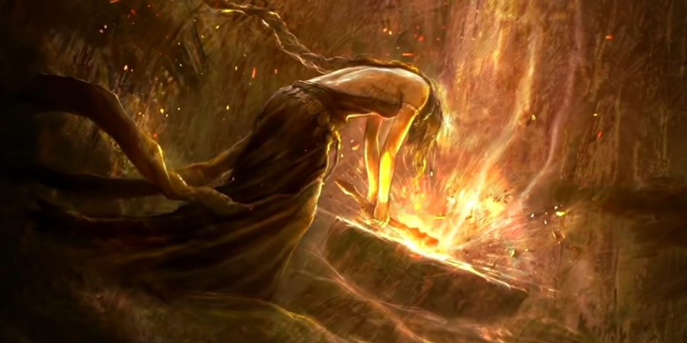
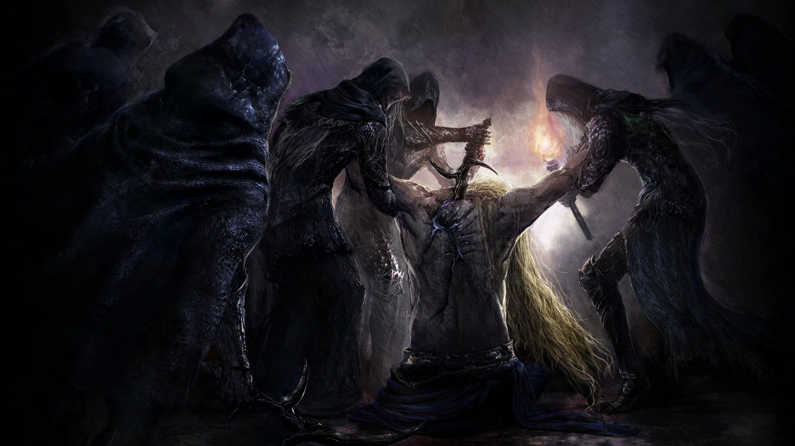

Antecedentes
Las Tierras Intermedias fueron una vez regidas por la Reina Márika la Eterna, quien protegía el Anillo de Elden, una fuente de poder divino. La desaparición del Anillo causó una guerra entre sus hijos, los semidioses, cada uno reclamando un fragmento para sí mismo.
Estos fragmentos, conocidos como Grandes Runas, corrompieron a sus portadores, desatando el caos sobre el mundo. Los árboles dorados, guardianes del orden, fueron oscurecidos por la locura de sus protectores.
El conflicto de las Tierras Intermedias
La historia de Elden Ring gira en torno a la destrucción del Anillo de Elden y la caída del Árbol Áureo. Tras la Dispersión, los fragmentos del Anillo —conocidos como Grandes Runas— fueron reclamados por semidioses que descendieron a la locura, desencadenando una guerra brutal.
Tu personaje, un Sinluz exiliado, regresa para reclamar esas Grandes Runas, restaurar el Anillo de Elden y convertirse en el Señor del Círculo.
La narrativa, densa y enigmática, se descubre explorando el mundo, leyendo descripciones de objetos y enfrentando a los jefes que custodian los secretos del reino.
Reina Márika y la Gran Ruptura
La Reina Márika, elegida por el Árbol Áureo, reinó con poder divino y prohibió la muerte, extrayendo la Runa de la Muerte del Anillo de Elden. Su decisión alteró el equilibrio del mundo, desencadenando una era de caos. Su consorte Radagon, también parte de ella, representa la dualidad entre destrucción y restauración.
La Gran Ruptura ocurrió cuando el Anillo de Elden fue destruido misteriosamente. La muerte regresó, los semidioses reclamaron fragmentos y las Tierras Intermedias quedaron divididas por el conflicto. Tu misión como Sinluz es desafiar este destino y forjar uno nuevo.
El Árbol Áureo y el Orden Dorado
El Árbol Áureo es la fuente de todo lo sagrado en las Tierras Intermedias. Representa la manifestación del Orden Dorado, una filosofía mágica y religiosa impuesta por los dioses. La Reina Márika fue su elegida, y su propósito era expandir ese orden a todos los rincones del mundo.
Sin embargo, su rebeldía contra las leyes impuestas por los dioses antiguos llevó a la retirada de la bendición y el colapso del equilibrio. La destrucción del Anillo de Elden fue un acto deliberado para romper el ciclo.
Los semidioses y sus dominios
Godrick el Injertado domina Velo Tormentoso, Malenia la Espada de Miquella protege el pantano podrido de Aeonia, Radahn reina sobre Caelid y Rennala, en la Academia de Raya Lucaria, lidera una secta de hechiceros. Cada uno refleja una interpretación distorsionada del poder divino.
